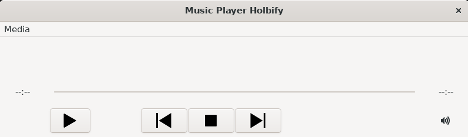
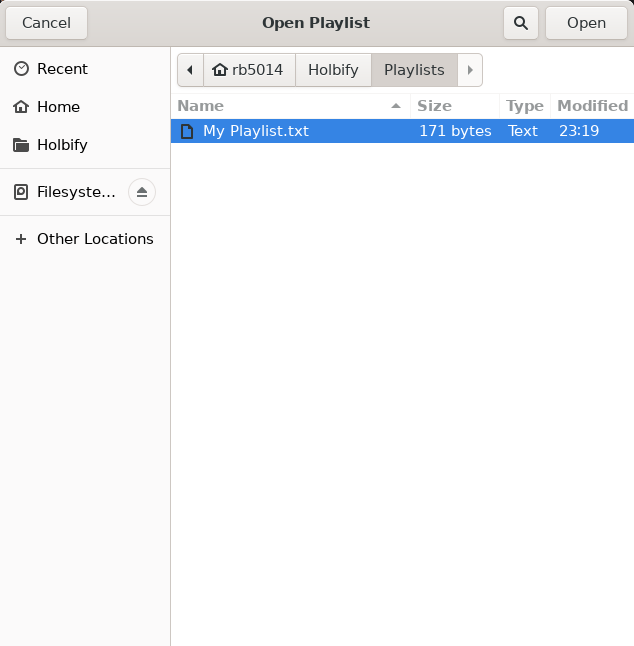

Holbify is a music player with basic features such as play/pause/stop a song, show song informations, go to next/previous song, change the volume of the program, create/open playlists...
The user by clicking on the Play button will either open a dialog to choose a file, or start again a song already loaded. Loading another song will send the previous one in a "Recent playlist", permitting the user to use the Previous/Next buttons.

It is possible to create playlists, stored locally with the name of your choice!

Play your best Bruno Mars playlist any time you want after you created it!
This is a Portfolio Project for end of first year at Holberton School by Romain Bayle.
This music player is inspired by: